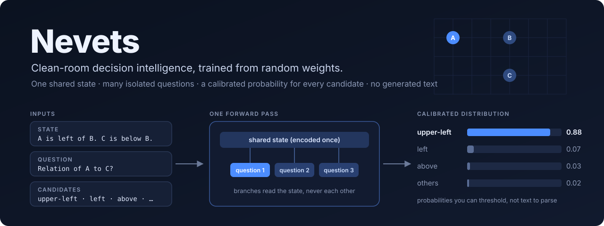

Nevets — live demos
All three demos run 32M-parameter decision models trained from random weights directly in your browser (ONNX + onnxruntime-web). Nothing is sent to a server. The page describes the situation in words; the model returns a probability for every option in one forward pass, with no generated text.
🧭 General playground (new)
One model, eight domains: spatial chains, rules with exceptions, exact probabilities, when to pay for more information, event ordering (including “cannot be determined”), dependency failures, family relations and cause vs correlation. Load fresh examples in prose, JSON, key-value or a table format it never saw in training, edit them, and shuffle the options to see that the answer does not depend on their order.
Open the playground →🤖 Treasure Hunt
The model steers a robot to the treasure by answering one spatial question per turn from a text description, including distractors and two-fact reasoning via landmarks.
Watch it play →♟ Chess
A separate model picks every move from the full list of legal moves. Play against it, or watch it face a random mover or itself.
Play chess →What to expect
- General playground and Treasure Hunt share one model, GENERAL-1: a recurrent-core decision model trained on eight domains, with option-order invariance built into the architecture. In our headless Treasure Hunt benchmark (
scripts/sim_treasure.py, 60 games per mode) it won every game and made 97.6% correct moves when it had to combine two facts (earlier demo models: 90.4% and 94.4%). Per-domain accuracy is listed on the playground page, weak spots included. - Chess uses
chess-base-r1, trained on 150k Stockfish-labelled Lichess positions. It is beginner level: it matches Stockfish's best move about 25% of the time and often cannot finish a won game. - Faithfulness: the browser models store weights as int8 (≈40 MB each). Against the original PyTorch models they choose the same answer on 99.5% (GENERAL-1, measured through this site's JavaScript pipeline on 192 requests across all domains) and 100% (chess) of our test requests; the tokenizer and request packing match Python exactly (checked by the repository's tests).
- The first load downloads the model once (≈40 MB); after that a Treasure Hunt decision takes roughly 0.3 s and a chess move roughly 0.5 s on a typical laptop CPU.
Data attribution: language pretraining uses FineWeb-Edu (Hugging Face), licensed ODC-By v1.0 (derived from Common Crawl); chess positions from the Lichess open database (CC0).
Source, research log and honest limitations: github.com/stevenmcsorley/Nevets.